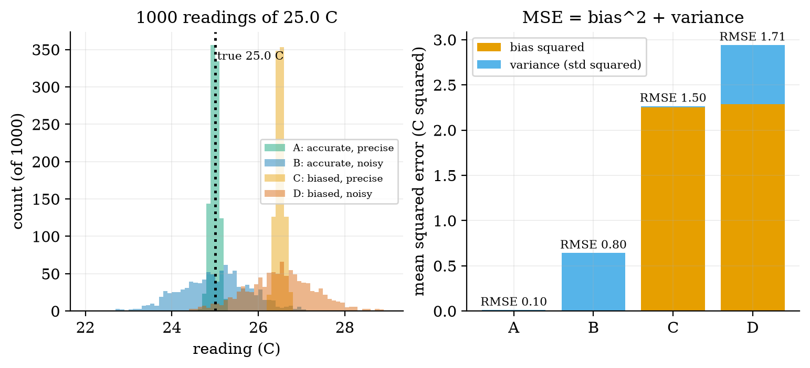
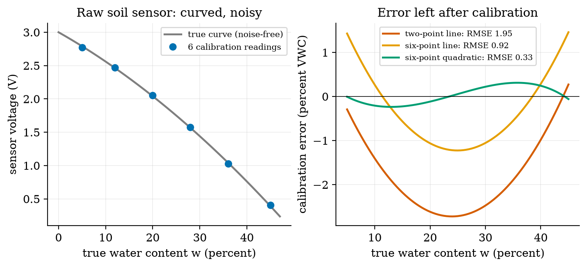
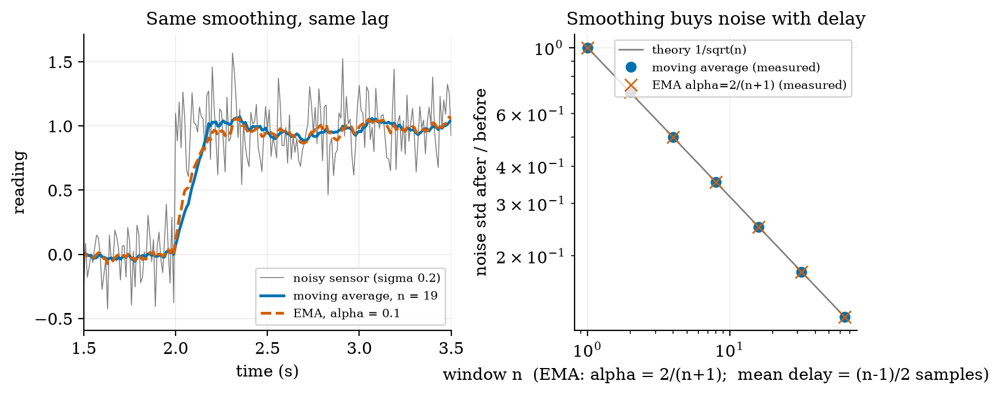
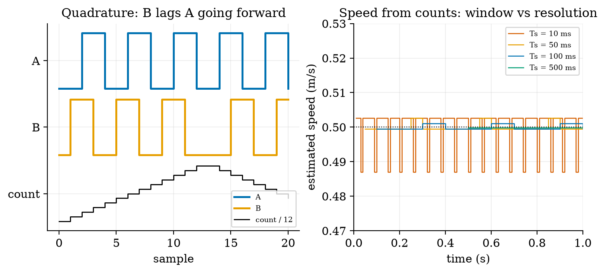
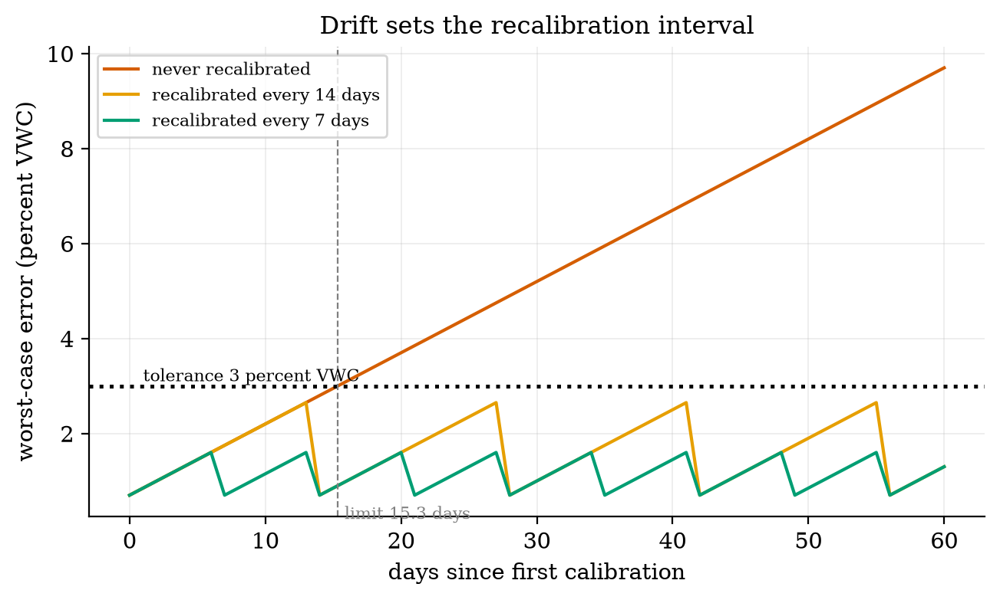

Unit 3 ready
Sensors and Actuators: Measuring, Calibrating, Filtering, Moving
Accuracy against precision, calibration by least squares, aliasing, filters, encoders, servos and steppers.
Session map
After this session you can:
- separate a sensor’s accuracy (bias) from its precision (noise), and show that mean squared error is bias squared plus variance;
- derive the least-squares line, its slope uncertainty, and use it (or a quadratic) to calibrate a curved soil-moisture sensor, with the error that is left;
- explain aliasing: find the frequency a too-slowly sampled signal pretends to have, and choose a sampling plan that defeats mains interference;
- design a moving-average or exponential filter from a noise target, and show that the two families give identical noise reduction and delay when \alpha=2/(n+1);
- decode a quadrature wheel encoder, turn counts into distance and speed, and pick the speed-estimation window; describe how a servo, a stepper and a relay are driven.
- Prerequisites: Unit 1 (noise, sampling period, first-order response), Unit 2 (divider, ADC step and its q/\sqrt{12} error, RC filter). Algebra, mean and variance (defined here as needed).
- Difficulty ladder used: easy → medium → medium-hard → hard (Sections 3.1 to 3.4); the hardest tier is posed as open questions in Section 3.5.
- Deliverables: this document (.tex, .pdf, .docx), 6 figures, the module
codes/sensors/sensors_np/(sensor model, bias/variance, least squares, moving average and EMA, aliasing, quadrature decoder, NTC, ultrasonic, servo, stepper; 8 tests), and the running-project sensing chain of Section 7. - Source anchors: all formulas are derived in the text; no paper or datasheet is quoted. The sound-speed formula 331.3+0.606\,T is the standard linear approximation. The soil sensor curve, noise, drift, thermistor parameters, encoder and servo numbers are assumed round values, not measurements of a named part. Every other number comes from the scripts in
figures/(fig01tofig06,analysis_numbers.py) or the module tests.
1. Terms: the term tree
| Term | Symbol | One-line meaning | Where it appears | New / known |
|---|---|---|---|---|
| range | the interval of true values the sensor can report | 2 | new | |
| resolution (of a sensor) | smallest change in the quantity that changes the reading | 2 | new | |
| accuracy and bias | b | closeness of the average reading to the truth; bias is the average error | 3.2 | new |
| precision | \sigma | repeatability: the spread of readings of an unchanged quantity | 3.2 | new |
| mean squared error | MSE | average of (reading minus truth) squared; equals bias^2 + variance | 3.2 | new |
| drift | a slow change of the sensor’s error with time | 3.4 | new | |
| calibration | fitting a map from raw reading to true value using known references | 3.3 | new | |
| least squares | choosing the curve that minimises the sum of squared residuals | 3.3 | new | |
| residual | e_i | data value minus fitted value | 3.3 | new |
| sampling rate | f_s | number of readings per second, 1/T_s | 3.3 | known |
| Nyquist frequency | f_s/2 | half the sampling rate: the highest frequency that can be represented | 3.3 | new |
| aliasing | a fast signal appearing as a slow one because of too few samples | 3.3 | new | |
| moving average | mean of the last n readings | 3.3 | new | |
| exponential filter (EMA) | \alpha | y_k=y_{k-1}+\alpha(x_k-y_{k-1}): a first-order filter in code | 3.3 | new |
| noise gain | std of the filtered noise divided by std of the input noise | 3.3 | new | |
| mean delay | average lag of a filter’s output behind its input, in samples | 3.3 | new | |
| thermistor (NTC) | resistor whose resistance falls as temperature rises | 3.4 | new | |
| capacitive sensor | measures a change in capacitance (used for soil moisture, humidity) | 3.1 | new | |
| time of flight (ultrasonic) | distance from the round-trip time of a sound pulse | 3.4 | new | |
| burst averaging | averaging several fast readings taken over a whole interference period | 3.4 | new | |
| quadrature encoder | two pulse trains A and B, 90 degrees apart, giving position and direction | 3.4 | new | |
| counts per revolution | CPR | encoder counts per turn of the wheel | 3.4 | new |
| servo | motor with built-in position control, commanded by a pulse width | 3.4 | new | |
| stepper motor | motor that moves a fixed angle per pulse | 3.4 | new | |
| relay | electrically operated mechanical switch | 3.4 | new |
Terms used but not taught here: IMU (named in Section 3.1; sensor fusion in Unit 10), odometry (Unit 8), PID (Unit 9), median filter (named in Section 3.5).
2. Remember
A sensor turns a physical quantity into an electrical one, and the ADC of Unit 2 turns that into a number. Its range is the interval of true values it can report; its resolution is the smallest change in the true value that changes the reading. Two different numbers describe how good it is:
- Accuracy: how close the average reading is to the truth. The average error is the bias b.
- Precision: how closely repeated readings of an unchanged quantity agree: their standard deviation \sigma (the noise of Unit 1).
A sensor can be precise and wrong, or accurate and noisy. Drift is bias that changes with time.
| error | what it looks like | the cure |
|---|---|---|
| noise (\sigma) | scatter around the average | average more readings, or filter |
| bias, gain and curvature errors | consistent offset or wrong scale | calibrate against references |
| drift | the offset moves with time | recalibrate at intervals |
| aliasing | a slow wave that is not in the signal | sample faster, or filter before sampling |
| quantisation | steps of one ADC code | more bits, or average (Unit 2) |
Memory hooks.
- Accuracy = aim, precision = grouping, like darts: a tight group in the wrong place is precise but not accurate. Averaging cures scatter, never aim.
- Calibrate first, filter second. A filter smooths what is there, including a wrong scale.
- Sample twice per cycle at least, but filter before you sample. (Nyquist, Section 3.3.)
- An EMA is a one-number moving average. It needs only the previous output.
Before you read on: three predictions (answers in Section 10).
- A sensor reads a true 25.0 ^\circC as 26.5 ^\circC on average, with scatter 0.1 ^\circC. If you average 1000 readings, what error remains: about 0.003, about 0.1, or about 1.5 ^\circC?
- A 5 Hz signal is sampled at 6 Hz. What frequency appears in the samples?
- A 19-point moving average and an exponential filter with \alpha=0.1 both smooth noise. Which reacts to a step sooner?
Recall quiz (answers in Section 10).
- What is the difference between accuracy and precision?
- Why does averaging many readings not remove a bias?
- What is the highest frequency a sampling rate f_s can represent?
- What does the A/B pair of a quadrature encoder give that a single pulse train cannot?
- What must you do to a thermistor circuit to reduce its self-heating?
3. Understand: the derivation
3.1 Tier 1 (easy): intuition and a picture
The greenhouse rover needs numbers: how wet is the soil, how warm is the air, how far did the wheels turn, how far is the wall. A resistive soil sensor passes a current between two probes and corrodes in a few weeks; a capacitive one measures how the water changes the capacitance of a plate pair and lasts. A thermistor changes resistance with temperature. An IMU (inertial measurement unit) reports acceleration and rotation rate. An ultrasonic sensor times a sound echo. All of them produce a voltage or a pulse that Unit 2’s circuits convert to a number.
The number is never exactly the truth. Figure 1 shows four simulated temperature sensors reading a true 25.0 ^\circC a thousand times each: A is accurate and precise, B accurate but noisy, C precise but biased by 1.5 ^\circC, D both biased and noisy. Look at C against B: the scatter of C is eight times smaller, yet its error is twice as large (RMSE 1.505 against 0.801 ^\circC). Scatter you can average away; a bias you cannot.

3.2 Tier 2 (medium): the definitions made precise
Let the true value be t and let a sensor give readings r_1,\dots,r_N with mean \bar r. The bias is b=\bar r-t, the noise (precision) is the standard deviation \sigma of the readings, and the mean squared error is \mathrm{MSE}=\frac1N\sum(r_i-t)^2. These satisfy an exact identity: add and subtract \bar r inside the square, \begin{aligned} \mathrm{MSE}&=\frac1N\sum_i\big((r_i-\bar r)+(\bar r-t)\big)^2 &&\text{(add and subtract }\bar r)\\ &=\frac1N\sum_i(r_i-\bar r)^2+2(\bar r-t)\frac1N\sum_i(r_i-\bar r)+(\bar r-t)^2 &&\text{(expand the square)}\\ &=\sigma^2+0+b^2. &&\text{(the readings' deviations from their mean sum to zero)} \end{aligned} \tag{1} So \mathrm{RMSE}=\sqrt{b^2+\sigma^2}. Figure 1 (right) confirms it: sensor D has b=1.511 and \sigma=0.810, so \sqrt{1.511^2+0.810^2}=1.715, equal to its measured RMSE of 1.715. Averaging n independent readings divides the variance of the noise by n (Section 3.3.4), but the bias term b^2 is untouched: the floor of the error is the bias. That is the reason calibration exists.
3.3 Tier 3 (medium-hard): the main derivations
3.3.1 Calibration by least squares: the straight line
Suppose we have n reference measurements (x_i,y_i), where x_i is the sensor’s raw output (volts) and y_i the true quantity from a trusted reference (say, the water content found by weighing and oven-drying a soil sample). We want a line y=a+bx that turns raw readings into true values. Least squares picks a,b to minimise the sum of squared residuals e_i=y_i-(a+bx_i): J(a,b)=\sum_{i=1}^n\big(y_i-a-bx_i\big)^2. \tag{2} At the minimum both partial derivatives vanish: \begin{aligned}
\frac{\partial J}{\partial a}&=-2\sum_i(y_i-a-bx_i)=0 \;\Rightarrow\; a=\bar y-b\bar x &&\text{(the line passes through the means)}\\
\frac{\partial J}{\partial b}&=-2\sum_i x_i(y_i-a-bx_i)=0 &&\text{(second normal equation)}\\
&\Rightarrow\;\sum_i x_iy_i-n\bar y\bar x+bn\bar x^2-b\sum_ix_i^2=0 &&\text{(insert }a\text{ and expand)}\\
&\Rightarrow\; b=\frac{\sum_i(x_i-\bar x)(y_i-\bar y)}{\sum_i(x_i-\bar x)^2}=\frac{S_{xy}}{S_{xx}}. &&\text{(collect terms)}
\end{aligned} \tag{3} The module’s fit_line is this formula; its test reproduces numpy.polyfit to 10^{-9}.
How uncertain is the slope? Suppose the true relation is a line and each y_i has independent noise of variance s^2. Then b=\sum_i\frac{(x_i-\bar x)}{S_{xx}}\,y_i is a weighted sum of the y_i, so \mathrm{Var}(b)=\sum_i\frac{(x_i-\bar x)^2}{S_{xx}^2}\,s^2=\frac{s^2}{S_{xx}},\qquad\mathrm{SE}(b)=\frac{s}{\sqrt{S_{xx}}}. \tag{4} Two lessons follow: more points (larger S_{xx}) and a wider spread of x (larger S_{xx} again) both shrink the uncertainty, so calibrate at both ends of the range, not clustered in the middle. For a noise s=0.5 and eight points on x=0\dots10 the formula gives \mathrm{SE}(b)=0.054; repeating the experiment 5000 times with fresh noise gave a spread of fitted slopes of 0.0537. (When s is not known it is estimated from the residuals with n-2 degrees of freedom, as fit_line does.)
3.3.2 A curved sensor: when a line is not enough
Our assumed capacitive soil sensor follows V=3.0-0.04\,w-0.0004\,w^2 volts, where w is the water content in percent (volumetric water content, VWC) and noise of 0.015 V: a falling, curved relation (Figure 2, left). We fit w as a function of the raw voltage V, since that is the map the node will use: to regress in this direction is the standard practice, because it minimises the error in the quantity we want. Three calibrations, each repeated 300 times with fresh noise and judged on a dense test grid from 5 to 45 percent:
| calibration | mean RMSE (percent VWC) | range over 300 repeats |
|---|---|---|
| two points (the ends), line | 1.95 | 1.51 to 2.36 |
| six points, least-squares line | 0.92 | 0.80 to 1.08 |
| six points, least-squares quadratic | 0.33 | 0.24 to 0.47 |

3.3.3 Sampling and aliasing
A microcontroller sees a signal only at the sampling instants t_k=k/f_s. Take a cosine of frequency f: its samples are \cos(2\pi fk/f_s). Now consider a second cosine with frequency f+mf_s for any whole number m: \cos\!\Big(2\pi\frac{(f+mf_s)\,k}{f_s}\Big)=\cos\!\Big(2\pi\frac{fk}{f_s}+2\pi mk\Big)=\cos\!\Big(2\pi\frac{fk}{f_s}\Big), \tag{5} because 2\pi mk is a whole number of turns. The two signals give identical samples: from the samples alone they cannot be told apart. That is aliasing. Every frequency is therefore indistinguishable from one frequency f_a in the range 0 to f_s/2, found by shifting f by a multiple of f_s and, if the result is negative, flipping its sign (a cosine is even; a sine flips sign): f_a=\big|f-f_s\cdot\mathrm{round}(f/f_s)\big|. \tag{6} The limit f_s/2 is the Nyquist frequency: a signal can be represented only if all its content lies below it. Check: a 9 Hz sine sampled at 10 Hz gives exactly the same samples as a negated 1 Hz sine (f_a=|9-10|=1 Hz); the script shows the two sample sequences equal to 10^{-9}. At 10 Hz sampling, the true frequencies 4, 5.5, 9, 11 and 19 Hz appear as 4, 4.5, 1, 1 and 1 Hz (Figure 3, right: a triangle wave folding at multiples of 5 Hz). Prediction 2 of Section 2: a 5 Hz signal sampled at 6 Hz appears at |5-6|=1 Hz (Figure 3, left, orange).
![Left: a 5 Hz sine (grey) sampled at 50 Hz (green), 12 Hz (blue) and 6 Hz (orange). At 50 and 12 Hz the sampling rate exceeds the Nyquist limit of 10 Hz and the 5 Hz is preserved (the straight lines between samples are only for drawing; the original is recovered by proper reconstruction, not by joining dots); at 6 Hz it is below the limit and the samples trace a 1 Hz wave that is not in the signal. Right: apparent frequency against true frequency for f_s=10 Hz folds back at every multiple of 5 Hz.](../assets/fig/u3/fig03_aliasing.png)
The cure is the order of operations: filter out frequencies above f_s/2 in analog hardware before the ADC (an RC low-pass from Unit 2 is the simplest), or sample fast and filter digitally. Filtering after sampling cannot remove an alias, because it is by then a legitimate-looking slow signal.
3.3.4 Digital filters: the moving average and the exponential filter
Two filters cover most embedded work. The moving average of the last n readings is y_k=\frac1n\sum_{j=0}^{n-1}x_{k-j}. The exponential filter (EMA) is the one-line recursion y_k=y_{k-1}+\alpha(x_k-y_{k-1}) with 0<\alpha\le1: move the output a fraction \alpha of the way toward the new reading. With \alpha=1-e^{-T_s/\tau} it is the exact sampled version of the RC filter of Unit 2 with time constant \tau (our alpha_from_tau): \alpha=0.0952 for \tau=0.1 s at 100 Hz.
Noise gain. If the readings are x_k=\text{signal}+\text{white noise} of variance \sigma^2 (independent samples), a filter with impulse response h_k (its output for a single unit pulse) produces noise variance \sigma^2\sum_kh_k^2. For the moving average h_k=1/n for n terms, so \sum h_k^2=n/n^2=1/n and the noise gain (output std over input std) is 1/\sqrt n. For the EMA, h_k=\alpha(1-\alpha)^k and, summing the geometric series \sum_k q^{2k}=1/(1-q^2) with q=1-\alpha, \sum_{k\ge0}h_k^2=\frac{\alpha^2}{1-(1-\alpha)^2}=\frac{\alpha^2}{\alpha(2-\alpha)}=\frac{\alpha}{2-\alpha},\qquad\text{gain}=\sqrt{\frac{\alpha}{2-\alpha}}. \tag{7}
Delay. The price of smoothing is lag. Define the mean delay as the average of the impulse response’s time index, \sum_kk\,h_k/\sum_kh_k. For the moving average it is \frac1n\sum_{k=0}^{n-1}k=\frac{n-1}{2} samples. For the EMA, using \sum_kkq^k=q/(1-q)^2 with q=1-\alpha and \sum_kh_k=1, \sum_kk\,\alpha q^k=\alpha\,\frac{q}{(1-q)^2}=\frac{q}{\alpha}=\frac{1-\alpha}{\alpha}\ \text{samples}. \tag{8}
The two families are the same at one point. Set \alpha=2/(n+1). Then \alpha/(2-\alpha)=\frac{2/(n+1)}{2n/(n+1)}=1/n, so the EMA noise gain is 1/\sqrt n, exactly the moving average’s; and (1-\alpha)/\alpha=\frac{(n-1)/(n+1)}{2/(n+1)}=\frac{n-1}{2}, exactly the moving average’s delay. At equal noise reduction an EMA and a moving average lag equally, but the EMA needs one stored number instead of n (the module’s tests check both identities to 10^{-12} and the delays from the impulse responses to 10^{-9}). With n=19 and \alpha=0.1, a noisy step of sensor noise 0.2 is smoothed to a standard deviation of 0.024 (moving average) and 0.028 (EMA) from a raw 0.19, and the filtered signal reaches 90% of the step after 0.17 s and 0.18 s respectively (Figure 4, left, at 100 Hz). Prediction 3 of Section 2: neither is sooner. Measured gains on long white noise agree with theory to better than 1% from n=2 to 64 (for example n=16, \alpha=0.1176: 0.2499 and 0.2500 measured against 0.2500 theory; n=64: 0.1246 and 0.1246 against 0.1250).

The trade is the same one as in Unit 1: a smoother output is a later output. A filter with a long window cannot be used inside a fast control loop, because delay is exactly what spoils a loop (Unit 1, Table 1).
3.4 Tier 4 (hard): generalisation, edge cases, what the textbooks gloss over
3.4.1 Temperature: a thermistor in a divider, and its self-heating
A negative-temperature-coefficient (NTC) thermistor follows the beta model R=R_0\exp\big(\beta(1/T-1/T_0)\big) with T in kelvin. For the assumed part, R_0=10\ \text{k}\Omega at T_0=25\ ^\circC and \beta=3950 K (a typical catalogue value): 33.6 k\Omega at 0 ^\circC and 3.59 k\Omega at 50 ^\circC. Put it as the bottom resistor of Unit 2’s divider with 10 k\Omega on top and 3.3 V: the output is 2.54 V at 0 ^\circC, 1.65 V at 25 ^\circC and 0.87 V at 50 ^\circC, and the sensitivity (from the divider derivative and \mathrm{d}R/\mathrm{d}T=-\beta R/T^2) is -30.9, -36.7 and -24.3 mV per kelvin. A 12-bit ADC with its 0.806 mV step then resolves 0.026 K, 0.022 K and 0.033 K per code. The resolution is excellent; the accuracy is another matter, for the current through the thermistor heats it. At 25 ^\circC, 1.65 V across 10 k\Omega dissipates V^2/R=0.27 mW; with an assumed dissipation constant of 1 mW per kelvin, that is a 0.27 K error, larger than the ADC step by a factor of 12. The cure uses Unit 2: power the divider only during the reading (from a pin, for 20 ms once a minute): the average dissipation drops by 3000 times.
3.4.2 Distance: ultrasonic time of flight and the speed of sound
An ultrasonic sensor sends a pulse and times its echo; the distance is d=vt/2, the factor 2 because the sound goes there and back. The speed of sound in air depends on temperature, v\approx331.3+0.606\,T m/s (T in ^\circC): 334.3, 343.4, 346.5 and 352.5 m/s at 5, 20, 25 and 35 ^\circC. An object at 1.000 m in air at 25 ^\circC returns an echo after 5.773 ms; a sensor that assumes 20 ^\circC reports 0.9913 m, an error of -8.7 mm (-0.87\%). In a cold greenhouse at 5 ^\circC, the same echo converted with the 25 ^\circC formula would put a 1.000 m object at 1.036 m (3.6% error). If the node has a temperature reading, it should use it. The echo time for an object 5 cm away is 289 \mus, for one at 4 m is 23.1 ms, so the useful measuring window and the maximum pulse rate follow from the range.
3.4.3 Mains interference, aliasing in the field, and burst averaging
The greenhouse has 50 Hz mains wiring. Suppose that couples a 50 Hz interference of amplitude 0.05 V onto the soil-sensor line (an assumed level). The node reads once a minute, a sampling rate of f_s=1/60 Hz, and the interference frequency is an exact multiple of it (50\times60=3000 cycles per minute), so equation (6) gives f_a=0 Hz: the 50 Hz appears as a constant offset in each reading whose size depends on the (random) phase at the instant of sampling. Simulating 20,000 single readings at random times gives a scatter of 0.0352 V, equal to the theory 0.05/\sqrt2=0.0354 V. With the sensor’s slope of 0.06 V per percent at 25 percent VWC, that is 0.59 percent VWC: larger than the sensor’s own noise of 0.25 percent (0.015 V) and 150 times larger than the ADC’s RMS quantisation error of 0.0039 percent.
The fix is not a digital filter after the fact (the alias is already in the number), but burst averaging: take 20 readings 1 ms apart (1 kHz) and average them. Twenty samples at 1 ms cover exactly one 20 ms mains period, and the mean of a sinusoid over a whole period is zero, so the interference vanishes: the simulated residual is 4.5\times10^{-15} V (rounding error). With 17 samples (not a whole period) the residual is still 0.0060 V. Choose the burst length to be a whole number of interference periods. The same burst also averages the sensor’s own white noise: from 0.25 percent for one reading to 0.015/\sqrt{20}/0.06=0.056 percent.
3.4.4 Wheel encoders: position, direction and speed
A quadrature encoder has two output pulse trains A and B, offset by a quarter of a cycle. Going forward the pair of bits cycles 00\to01\to11\to10; backward, the reverse. Reading each change of the pair gives four counts per cycle (x4 decoding) and the order gives the direction, which a single pulse train cannot (Figure 5, left). The module’s quadrature_decode is a lookup table of legal transitions; the test drives the encoder forward 40 counts and back 25 and decodes +15 (and the figure’s sequence, 12 forward and 7 back, decodes +5 against the expected +5). An illegal jump (both bits change at once) means a missed transition and is counted as an error.
Our assumed encoder gives 11 pulses per motor-shaft revolution, x4 decoding makes 44 counts, and a 1:30 gearbox makes 1320 counts per wheel revolution (CPR). With a wheel radius of 33 mm one count is 2\pi\times0.033/1320=0.157 mm of travel. At 0.5 m/s the wheel produces 3183 counts per second and the A channel runs at 796 Hz, which the microcontroller must catch with interrupts or a hardware counter (Unit 4). One missed count in a 20 m patrol would be an error of 0.0008 percent, so the encoder resolution is never the limit of odometry; wheel slip is (Unit 8).
Speed is estimated by counting over a window T_s: \hat v=\Delta N\cdot d/T_s. The count \Delta N is an integer, so the estimate moves in steps of d/T_s. For T_s=10, 50, 100 and 500 ms the step is 15.7, 3.14, 1.57 and 0.314 mm/s and the measured peak error at a true 0.5 m/s was 13.1, 2.7, 1.1 and 0.17 mm/s (Figure 5, right). A short window gives a fast but coarse estimate; a long window a fine but late one: the same trade as the filters, and the same trade a speed controller faces (Unit 9).

3.4.5 Actuators: servo, stepper, relay
- DC motor (Unit 2): continuous rotation, speed set by average voltage (PWM), position known only through an encoder.
- Hobby servo: a DC motor, a gearbox, a potentiometer and a control circuit in one box. It is commanded by a pulse of 1.0 to 2.0 ms repeated every 20 ms (assumed typical): 1.5 ms for the middle position, so 45 degrees is 1.25 ms. A timer ticking every microsecond has 1000 ticks across 180 degrees, 0.18 degree per tick. Position control is inside; a stalled servo draws current and heats.
- Stepper motor: moves a fixed angle per pulse, 1.8 degrees (200 steps per revolution) for the common type, 0.1125 degree with 1/16 microstepping (800 microsteps for 90 degrees). It is open loop: if the load torque is too large it silently loses steps, and the controller does not know. Good for a printer axis; poor for a robot wheel that may jam.
- Relay: an electromagnet that closes a mechanical contact; it isolates a high-voltage or high-current load from the logic, but its contacts wear (a limited number of switchings) and the coil is an inductor, so it needs the flyback diode of Unit 2.
3.4.6 Drift and the recalibration interval
Capacitive soil sensors change with temperature, salinity and age. Suppose (assumed) the error grows by 0.15 percent VWC per day after calibration, starting from the 0.7 percent of a typical calibration; the node’s tolerance is 3 percent. The error stays under tolerance for (3.0-0.7)/0.15=15.3 days, so the sensor must be recalibrated at least every two weeks (Figure 6): recalibrating every 14 days gives a worst error of 2.65 percent, every 7 days 1.6 percent; never recalibrating gives 9.7 percent after 60 days, with 45 of the 60 days over tolerance.

3.5 Tier 5 (hardest): open questions
- Is the noise really white? Averaging n readings gives 1/\sqrt n only if the errors are independent. Sensors also have slow, correlated noise and drift for which averaging more gives no gain beyond some n. How would you detect that from a long record of a constant input? (The Allan variance is the standard tool; it is named here, not taught.)
- Outliers. One wild reading (a loose wire) ruins a moving average and an EMA. A median filter (the middle of the last n readings) ignores it, but its noise gain for Gaussian noise is worse than the average. Design a two-stage scheme and decide what it costs in delay.
- Combine two imperfect sensors. A gyroscope is smooth but drifts; an encoder is drift-free but steps. Can a filter use each where it is good? (This is sensor fusion, the topic of Unit 10.)
4. Apply
4.1 Worked problems
Problem 1 (bias and averaging). A sensor with bias +0.4 and noise 0.3 reads a constant true value. What RMSE does a single reading have, and what does an average of 100 readings have?
Solution. Single: \sqrt{0.4^2+0.3^2}=0.5. Average of 100: the noise falls to 0.3/\sqrt{100}=0.03 but the bias stays: \sqrt{0.4^2+0.03^2}=0.401. Averaging helped by 20% only.
Problem 2 (least squares by hand). Calibration points (x,y)=(1,2),(2,4),(3,5): find the line.
Solution. \bar x=2,\ \bar y=11/3. S_{xx}=1+0+1=2; S_{xy}=(1-2)(2-11/3)+0+(3-2)(5-11/3)=5/3+4/3=3. So b=3/2 and a=11/3-3=2/3. Check with fit_line([1,2,3],[2,4,5]).
Problem 3 (aliasing). A motor vibrates at 130 Hz and the node samples at 100 Hz. What frequency appears?
Solution. f_a=|130-100\cdot\mathrm{round}(1.3)|=|130-100|=30 Hz. To see a vibration at 130 Hz one must sample above 260 Hz, or filter it out before the ADC.
Problem 4 (filter design). A reading has noise 0.2 and is sampled at 10 Hz. You want noise 0.05 and a delay no more than 0.5 s. Choose an EMA.
Solution. The gain needed is 0.05/0.2=0.25=1/\sqrt n, so n=16 and \alpha=2/17=0.1176. The mean delay is (16-1)/2=7.5 samples =0.75 s at 10 Hz: too long. Either accept noise 0.2/\sqrt{n} with n=11 (delay 0.5 s, gain 0.30, noise 0.060) or sample faster (at 20 Hz the same n=16 costs 0.375 s).
Problem 5 (encoder). A wheel with 1320 counts per revolution and radius 33 mm advances 4000 counts. How far did it go?
Solution. 4000\times0.1571 mm =628 mm (about 3.03 wheel turns).
4.2 Code and figures
import sensors_np as S
import numpy as np
fit = S.fit_line([1, 2, 3], [2, 4, 5]) # a = 0.667, b = 1.5, with standard errors
print(S.alias_frequency(130, 100)) # 30.0
a = S.alpha_matching_ma(19) # 0.1: EMA with the 19-point average's gain and delay
y = S.ema(np.random.default_rng(0).normal(size=1000), a)
print(S.ntc_temperature(S.ntc_resistance(37.0))) # 37.0
print(S.ultrasonic_distance(5.7728e-3, 25.0)) # 1.000 mThe module and its README are in codes/sensors/sensors_np/. Its eight tests check the bias-variance identity, the least-squares line (exact and equal to numpy.polyfit), the slope’s standard error against a 4000-run Monte Carlo (within 5%), the moving-average and EMA noise gains (within 2% and 1%), the exact equality of gain and delay at \alpha=2/(n+1), aliasing (including 9 Hz equal to a negated 1 Hz), the quadrature round trip, and the NTC, ultrasonic, servo and stepper helpers.
What would look different if the theory were wrong? If (4) were wrong, the Monte Carlo spread of the slope would not match 0.054; it is 0.0537. If (7) or (8) were wrong, the measured EMA gains and delays in Figure 4 would not fall on the moving-average points; they do.
5. Analyze
Limits. As the number of averaged readings grows, noise falls as 1/\sqrt n and the error tends to the bias (and, in practice, to the slow correlated noise): no filter beats the calibration. As \alpha\to1 the EMA does no filtering (gain 1, delay 0); as \alpha\to0 the gain and the responsiveness both vanish. As f\to f_s/2 the aliasing formula folds back with no safety margin; real systems sample at 2.5 to 10 times the highest frequency of interest.
Dominance. In the soil node’s error budget at 25 percent VWC (Section 7): calibration residual 0.33 percent (quadratic fit), sensor noise 0.056 percent after the burst, ADC quantisation 0.0039 percent, drift 0.15 percent per day. After about two days drift (0.3 percent) already equals the calibration error. Drift, not noise or quantisation, dominates a deployed sensor. Adding ADC bits would be wasted effort.
Order-of-magnitude estimate. Mains interference of 50 mV on a 60 mV-per-percent sensor is about 0.8 percent peak: an effect far larger than the ADC’s 0.013 percent step; one can see this before simulating.
Sensitivity. The EMA’s mean delay is (1-\alpha)/\alpha: halving \alpha from 0.2 to 0.1 more than doubles the delay (4 to 9 samples). The slope uncertainty scales as 1/\sqrt{S_{xx}}: spreading calibration points to twice the range halves it.
Failure modes. (1) Calibrating in the middle only: the ends are extrapolated and wrong. (2) Averaging a bias: no gain. (3) Sampling a fast signal slowly: an alias that looks plausible. (4) A long filter inside a control loop: delay spoils the loop (Unit 1). (5) Missed encoder counts (interrupts blocked): permanent position error. (6) Stepper overload: silent lost steps. (7) Thermistor self-heating and ultrasonic temperature error: the sensor measures its own circuit or the wrong speed of sound.
Items used from the pedagogy checklist: limits, dominance, estimate, sensitivity, failure modes, residual structure (Figure 2 right), uncertainty (slope standard error), invariants (MSE identity, EMA-MA equivalence), constructed-versus-measured (the sensors are simulated).
6. Evaluate
Moving average versus EMA versus median. At equal noise reduction the moving average and EMA lag equally, but the EMA stores one number and the moving average n; the moving average has a finite memory (a bad reading disappears after n samples) while the EMA remembers it, with decaying weight, forever. A median filter resists outliers but gives less noise reduction on Gaussian noise. For an 8-bit microcontroller, the EMA with \alpha=2^{-k} is one subtraction and a shift.
Linear versus polynomial calibration. The quadratic cut the error from 0.92 to 0.33 percent here because the curve is quadratic by construction. With real data, a higher-degree polynomial fits the calibration points better but can oscillate between them; judge a calibration on points not used to fit it (we judged on a dense test grid), and prefer the lowest degree that leaves a residual at the noise level.
Analog versus digital anti-alias filtering. An RC low-pass before the ADC removes frequencies above the Nyquist limit once and for all but cannot be changed in software; sampling fast and averaging digitally is flexible but costs energy (Unit 2: awake charge). The burst of Section 3.4.3 is a compromise: 20 ms awake per report.
Sensor choice. Resistive soil probes are cheap and corrode; capacitive ones last but need calibration and drift. A thermistor is cheap and sensitive but non-linear and self-heating; a digital temperature chip removes the analog design at a higher cost per part and a bus (Unit 4). No choice is best in general.
Context. The statistical idea behind calibration, least squares, is two centuries old and underlies most of data fitting; Kalman filtering (Unit 10) is its recursive, time-varying descendant. When NOT to use these methods: when the noise is not roughly independent (slow wander), when outliers dominate (use a median first), or when a single factory calibration is a legal requirement (do not silently re-calibrate a certified instrument).
Honesty about this Unit’s numbers. The simulated sensors test the algebra and the code, not any real device. The soil sensor curve, noise, drift, thermistor parameters, mains level, encoder and servo numbers are assumed. The identities (MSE decomposition, EMA and moving-average equivalence, aliasing) are exact and hold for any sensor.
7. Create
- Calibrate your own sensor. Take any sensor with a curved response (a thermistor, a light-dependent resistor), collect 8 points against a reference, fit degrees 1, 2 and 3, and judge them on held-out points.
- An aliasing experiment. Generate a 130 Hz signal, sample it at 100, 200 and 300 Hz with
sample, and predict the apparent frequency withalias_frequencybefore looking. - Design the filter for the encoder speed. Choose a window or an EMA for the rover’s wheel-speed estimate that gives under 5 mm/s of count noise and under 100 ms of delay; justify it from Section 3.4.4.
- Median-then-EMA. Add a median-of-5 stage before the EMA, inject 1% outliers, and measure the error against the EMA alone.
- Could become a package module:
iotrobotics.sensingwithfit_line,fit_poly,moving_average,ema,alias_frequency,quadrature_decode.
Running project, Layer 2: the sensing chain. The soil node’s reading becomes: burst-average 20 samples at 1 kHz (one whole mains period) \to quadratic calibration from six reference points spread over 5 to 45 percent \to report. Error budget at 25 percent VWC (assumed sensor):
| term | size (percent VWC) | note |
|---|---|---|
| calibration residual (quadratic, 6 points) | 0.33 | Section 3.3.2 |
| sensor noise after a 20-sample burst | 0.056 | 0.015/\sqrt{20}/0.06 |
| ADC quantisation (12-bit, RMS) | 0.0039 | q/\sqrt{12}/0.06 |
| mains interference | \approx0 | whole-period burst; 0.59 for one reading |
| drift | 0.15 per day | recalibrate within 15.3 days for a 3 percent tolerance |
The air temperature chain: NTC divider powered only during the reading, 0.022 K per ADC code, self-heating removed by duty-cycling the divider. The encoder chain: x4 decoding, 1320 counts per wheel revolution, 0.157 mm per count, a 100 ms window for speed (1.6 mm/s step). New or updated requirements:
| id | requirement | status after Unit 3 |
|---|---|---|
| R11 (new) | soil moisture within 3 percent VWC at all times | met with a recalibration at least every 15 days (assumed drift); noise and quantisation are negligible |
| R12 (new) | temperature within 0.5 K including self-heating | met if the divider is powered only while reading (0.27 K otherwise, with the assumed dissipation constant) |
| R5 | position error after a 20 m patrol under 10 percent | the encoder contributes under 0.001 percent; the limit is wheel slip (Unit 8) |
| R13 (new) | wheel speed estimate to 2 mm/s at 0.5 m/s | 100 ms window gives a 1.6 mm/s step with a delay of at most 100 ms |
8. Visualization lesson
| Chart type | Best for | How it misleads | matplotlib call |
|---|---|---|---|
| overlaid filled histogram | comparing the distributions of a few groups | opaque bars hide each other; use transparency and common bins | ax.hist(x, bins, histtype="stepfilled", alpha=0.45) |
| stacked bar of a decomposition | splitting a total into additive parts (bias squared + variance) | only the bottom segment shares a baseline | ax.bar(x, a), ax.bar(x, b, bottom=a) |
| residual plot (error against input) | showing whether a fit leaves structure | a flat band means a good fit; a bow means a missing term (Figure 2 right) | ax.plot(x, fit(x) - y) |
| sampled signal with markers | showing what the samples are, against the true curve | joining sample points by lines suggests information between them that is not there | ax.plot(t, v, "o-") |
| folding (triangle) plot | alias frequency against true frequency | a continuous line suggests a continuous measurement; it is a map | ax.plot(f, alias(f)) |
| step-response overlay | comparing filters on one input | different noise seeds make unfair comparisons; use the same data | ax.plot(t, y1), ax.plot(t, y2, "--") |
| digital timing diagram | logic signals against time (A and B) | offsets stacked on one axis lose their absolute level; label the rows | ax.step(k, a + 2.4, where="post") |
| sawtooth against a limit | a quantity that grows and is reset (drift and recalibration) | the line implies the error is known each day; it is a bound | ax.plot(days, err), ax.axhline(tol) |
Reading Figure 2 (right) as a chart. A residual plot makes a fit’s structure visible: the two bowed curves say that a straight line cannot follow the data, whatever its RMSE. A single RMSE number would have hidden the shape.
9. Problem set
- (easy) A thermometer reads 21.7, 21.9, 21.8, 21.6 and 21.8 for a true 21.0. Find its bias, noise (population std) and RMSE, and check that RMSE^2 = bias^2 + std^2.
- (medium) Fit a line by hand to (0,0.1),(1,2.2),(2,3.9),(3,6.1) and give the slope’s standard error from (4) using the residual standard deviation with n-2=2 degrees of freedom.
- (medium-hard) A vibration at 175 Hz is sampled at 400 Hz, at 200 Hz and at 150 Hz. State the apparent frequency in each case, and say which sampling rates are safe.
- (hard) Show that the EMA step response is 1-(1-\alpha)^{k+1} after a unit step at sample 0 (starting from y=0). Find the number of samples to reach 90% for \alpha=0.1 and compare with the 19-point moving average’s step response (which reaches 90% after how many samples?).
- (hardest) A 12-bit ADC reads a sensor with a mains hum of 0.05 V at 50 Hz. Design a burst (number of samples and rate) that removes the hum to under 0.1% of its amplitude even if the clock is off by 1%. (Hint: the residual of averaging N samples over a window that is (1+\epsilon) periods long.)
10. Retrieval practice and recap
Answers to the Section 2 predictions.
- About 1.5 ^\circC: the bias remains; only the 0.1 ^\circC scatter is averaged away.
- 1 Hz.
- Neither: they have the same delay (9 samples) and the same noise gain; the moving average reached 90% in 0.17 s and the EMA in 0.18 s.
Answers to the Section 2 recall quiz.
- Accuracy is closeness of the average to the truth (bias); precision is the repeatability (scatter).
- Averaging only reduces independent scatter; a bias is the same in every reading.
- Half the sampling rate, f_s/2 (the Nyquist frequency).
- The direction of motion (and, with x4 decoding, four times the resolution).
- Power the divider only while reading, or use a larger series resistor, so that less power heats the thermistor.
Explain it to a friend.
- Why can a very precise sensor still give the wrong answer?
- Why does a signal sampled too slowly look like a slower signal instead of just looking bad?
- Why is an exponential filter a good choice for a small microcontroller?
Re-derive by hand tomorrow, without looking: (a) the least-squares slope S_{xy}/S_{xx}; (b) the EMA noise gain \sqrt{\alpha/(2-\alpha)} and mean delay (1-\alpha)/\alpha; (c) the alias frequency of 130 Hz sampled at 100 Hz.
11. Where next
- Unit 4 puts the sensors on a microcontroller: GPIO pins, interrupts (for the 796 Hz encoder channel), timers, buses (I2C, SPI, UART) and the state machine that runs the node, with deep sleep (which must make the 0.5 s Wi-Fi connect of Unit 2 believable).
- Terms named here but not taught: IMU fusion (Unit 10), odometry (Unit 8), median filter (named), Allan variance (named). They are registered in CURRICULUM.md.
- Open threads: all sensor curves, noise, drift and part parameters are assumed; real-sensor calibration not done; the dissipation constant of the thermistor is assumed.